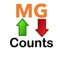

MG Counts
New: STORYFIRE Subscriber Counter
http://mgcounts.atwebpages.com/Storyfire.html
Hello!
Simply choose counter from the list below and enjoy!
YouTube
YouTube Subscriber Count (API)
YouTube Live View/Like/Dislike Count
Other
COVID19/Coronavirus Counter
STORYFIRE
STORYFIRE Subscriber Counter